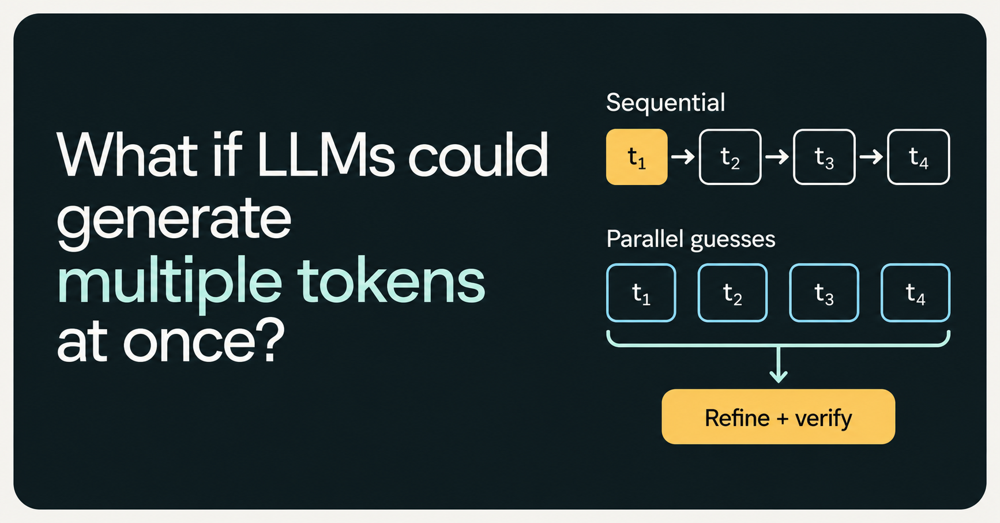
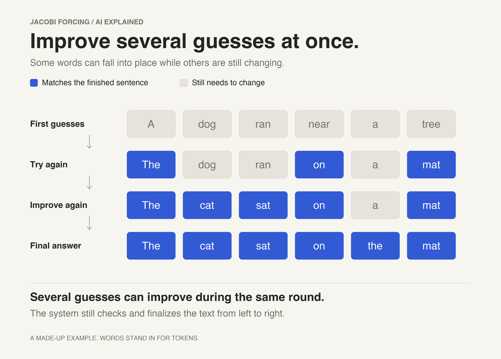

What if LLMs could generate multiple tokens at once?

Standard autoregressive decoding generates text one token at a time, with each prediction conditioned on the tokens already generated. Jacobi decoding offers an alternative: predict a block of tokens in parallel, then refine those guesses over successive passes. Jacobi Forcing trains models on their own intermediate drafts so the decoder can accept more tokens per pass.
The decoder starts with a block of token guesses. In each iteration, every position is recalculated using the previous iteration’s values to its left. The third position, for example, uses the old guesses for positions one and two; it doesn’t wait for their updated values. This lets the model update the whole block in one forward pass.
Causal attention is preserved: each token only attends to positions to its left. The parallelism comes from using provisional values at those positions, rather than waiting for each one to be confirmed.

Matching a token at a later position isn’t enough to accept it. The decoder verifies and commits a contiguous prefix from the left; later guesses stay provisional until their preceding context is confirmed.
Parallel decoding only helps if enough predictions survive verification. A model trained mostly on clean text can struggle with these changing prefixes. More parallel computation doesn’t automatically mean more accepted tokens.
The researchers collect the model’s own decoding trajectories: intermediate drafts leading to a converged output. Jacobi Forcing uses them to train the model toward that output even when earlier tokens or entire earlier blocks are still unconverged. An ordinary next-token training objective is retained alongside this to help preserve answer quality.
The published recipe mixes cleaner and noisier context in a progressive schedule. Training starts with 16-token blocks for 10,000 steps. The researchers then collect fresh trajectories from the updated model and train with 32-token blocks for another 10,000 steps. Those block sizes describe the training setup; they don’t tell us how many tokens will be accepted in a generation step.
Two decoding refinements make use of the improved drafts. Multi-block decoding updates later blocks while the first is being confirmed. Rejection recycling caches promising token sequences from discarded drafts and verifies them as future candidates. Neither refinement bypasses verification before tokens are committed. The authors’ explanation shows how both work.
Keeping causal attention also preserves KV-cache reuse for the confirmed prefix. The decoder can revise the draft without recomputing attention information for tokens it has already accepted.
The HumanEval results show why the training matters. On this benchmark of small coding problems, the original model generated 41.3 tokens per second. Plain Jacobi decoding managed 39.9, so it was actually slower. After Jacobi Forcing training, that rose to 159.5. Multi-block decoding and rejection recycling brought it to 163.9. Most of the gain here came from training the model to make better guesses.
Here’s the broader comparison from Tables 1 and 3 of the paper. The models are based on Qwen2.5-Coder-7B-Instruct for coding and Qwen2.5-Math-7B-Instruct for maths, running on NVIDIA A100 GPUs. All use greedy decoding, choosing the highest-scoring next token. The Jacobi Forcing results include both refinements, with speed and quality measured under the same settings.
| Test | Tokens/s, original → JF | Speedup | Score, original → JF |
|---|---|---|---|
| HumanEval · coding | 41.3 → 163.9 | 3.97× | 87.8% → 83.5% |
| MBPP · coding | 43.1 → 113.0 | 2.62× | 74.3% → 70.4% |
| GSM8K · school maths | 41.8 → 154.9 | 3.71× | 92.4% → 91.4% |
| MATH · harder maths | 41.3 → 152.0 | 3.68× | 77.0% → 77.4% |
JF = Jacobi Forcing with multi-block decoding and rejection recycling. Coding scores measure success on the first generated answer (pass@1); maths scores are solve rates. These are researchers’ measurements, not tests run for this article.
I’d pay as much attention to the last column as the speedup. HumanEval dropped by 4.3 percentage points and MBPP by 3.9. The changes on maths were smaller. Training changes the model, and its answers can change too. Whether that tradeoff is worthwhile depends on what you’re using it for.
At those HumanEval rates, generating 1,000 tokens would take about 24.2 seconds versus 6.1 seconds. This is illustrative arithmetic, excluding prompt processing, network delays and tool calls, rather than measured end-to-end latency.
The hardware and serving software matter as well. In a separate test with one request at a time on an NVIDIA B200, using the serving framework vLLM, the researchers measured 221.3 → 865.8 tokens per second, a 3.91× speedup. That’s a different setup from the A100 comparison above; the details are in Table 2.
Block size and acceptance rate are different measures. In the A100 HumanEval result, the decoder proposed 64-token blocks but accepted an average of 4.09 tokens per forward pass. Each parallel pass does more work, so accepting four tokens per pass doesn’t necessarily make generation four times faster.
Using Jacobi Forcing requires a trained checkpoint and a compatible decoder. The extra computation means lower latency won’t automatically translate to lower cost or energy use, especially when serving concurrent requests.
Verification checks agreement with the trained model’s greedy predictions. It doesn’t establish factual correctness or test whether generated code works.
I’d evaluate it on the application’s actual workload, measuring completed tasks as well as tokens per second. The useful gain is the time saved after accounting for the checks and corrections needed to use the output.